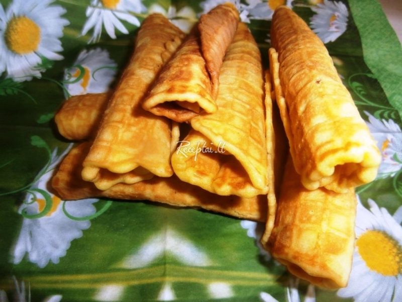
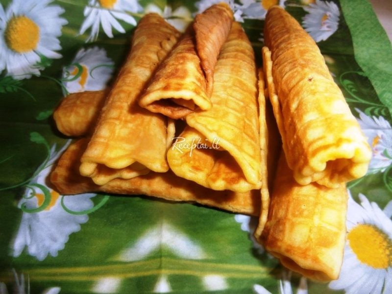

Ledų ir desertų asortimentas - Iceco Ledai
2020.10.29 08:57
Apie mus Patirtis Prekių ženklai Eksportas Naujienos Asortimentas Kokybė ir gamyba Kontaktai LT EN Ledų forma Ant pagaliuko Dėžutėse HoReCa Indeliuose Tarp vaflių Vafliniuose puodeliuose Vafliniuose rageliuose Prekės ženklas AURUM ETALON POP RETRO
× Išvalyti filtrus
Ant pagaliuko
AURUM biskvito skonio valgomieji ledai su aviečių-rose įdaru, glaistyti Belgišku pieniniu šokoladu100 ml
AURUM kriaušių-brendžio skonio valgomieji ledai, glaistyti Belgišku pieniniu šokoladu100 ml
AURUM RETRO kondensuoto pieno skonio plombyras su plonu kakaviniu glaistu100 ml
AURUM vanilės skonio valgomieji ledai su šokoladiniu įdaru, glaistyti vyšnių skonio glaistu100 ml
AURUM vanilės skonio valgomieji ledai su aviečių įdaru, glaistyti triufelių skonio glaistu100 ml
AURUM vanilės skonio valgomieji ledai glaistyti kakaviniu glaistu su migdolais100 ml
AURUM vanilės skonio valgomieji ledai glaistyti karameliniu glaistu su migdolais100 ml
AURUM vanilės skonio valgomieji ledai su karameliniu įdaru, glaistyti dvigubo pieninio šokolado karameliniu glaistu su sūrios karamelės gabaliukais110 ml
AURUM vanilės skonio valgomieji ledai su aviečių įdaru, glaistyti dvigubu pieninio šokolado aviečių glaistu110 ml
AURUM vanilės skonio valgomieji ledai su vyšnių įdaru, glaistyti dvigubu juodojo šokolado su čili pipirais vyšnių skonio glaistu110 ml
AURUM vyšnių ir vanilės skonio valgomieji ledai70 ml
AURUM mangų ir vanilės skonio valgomieji ledai70 ml
AURUM kolos skonio valgomieji ledai70 ml
TROPICAL MIX Ananasų ir tropinių vaisių skonio ledai70 ml
AURUM arbūzų melionų skonio vaisiniai ledai70 ml
AURUM FRUIT multivitaminų skonio ledai70 ml
ETALON vanilės skonio valgomieji ledai glaistyti kakaviniu glaistu100 ml
ETALON vanilės skonio ledai glaistyti kakaviniu glaistu ir žemės riešutais100 ml
ETALON vanilės skonio ledai glaistyti karameliniu glaistu ir žemės riešutais100 ml
ETALON ESKIMO vanilės skonio ledai glaistyti kakaviniu glaistu80 ml
ETALON ESKIMO vanilės skonio ledai glaistyti kakaviniu glaistu ir žemės riešutais80 ml
Vafliniuose rageliuose
AURUM vaflių skonio valgomieji ledai su irisiniu įdaru ir karamelės skonio glaistu su vaflių traškučiais150 ml
AURUM maskarponės skonio valgomieji ledai su braškių-bazilikų įdaru ir kakaviniu glaistu su kviečių-ryžių traškučiais150 ml
AURUM vanilės skonio grietininiai ledai su vyšnių įdaru ir liofilizuotų vyšnių gabaliukais150 ml
AURUM vanilės skonio grietininiai ledai su sūrios karamelės įdaru ir karamelizuotais migdolais150 ml
AURUM vanilės skonio grietininiai ledai su šilauogių įdaru ir mėlynėmis150 ml
AURUM vanilės ir triufelių skonio valgomieji ledai su kakavinio pyrago gabaliukais150 ml
AURUM biskvito skonio gritininiai ledai su obuolių-cinamono įdaru ir karamelizuotais obuoliais, 150 ml150 ml
AURUM vanilės skonio valgomieji ledai su braškių įdaru200 ml
AURUM šokoladiniai valgomieji ledai su šokolado drožlėmis200 ml
AURUM karamelės skonio valgomieji ledai su karamelės įdaru200 ml
AURUM vanilės skonio valgomieji ledai su vyšnių įdaru200 ml
ETALON vanilės skonio valgomieji ledai su irisiniu įdaru ir karamelės skonio glaistu ir vaflių traškučiais150 ml
ETALON vanilės skonio valgomieji ledai su aviečių įdaru200 ml
ETALON vanilės skonio valgomieji ledai200 ml
ETALON vanilės skonio ledai su vyšnių įdaru200 ml
Vafliniuose puodeliuose
AURUM airiško kremo skonio valgomieji ledai su plikyto kremo įdaru ir kakaviniu riešutiniu glaistu su vaflių traškučiais160 ml
AURUM vanilės skonio valgomieji ledai su gervuogių įdaru ir mėlynių glaistu160 ml
AURUM vanilės skonio valgomieji ledai su juodųjų serbentų įdaru160 ml
AURUM vanilės skonio valgomieji ledai su šaltalankių įdaru160 ml
AURUM vanilės skonio plombyras praturtintas kalciu ir magniu160 ml
AURUM RETRO vanilės skonio plombyras150 ml
AURUM RETRO šokoladinis plombyras150 ml
ETALON karamelės skonio valgomieji ledai su karamelės skonio įdaru ir irisų skonio glaistu su vaflių traškučiais160 ml
ETALON vanilės skonio valgomieji ledai120 ml
ETALON sutirštinto pieno valgomieji ledai su sutirštinto pieno įdaru120 ml
ETALON vanilės skonio valgomieji ledai su razinomis120 ml
ETALON šokoladiniai valgomieji ledai120 ml
POP kramtomosios gumos skonio valgomieji ledai120 ml
POP braškių skonio valgomieji ledai120 ml
POP bananų skonio valgomieji ledai120 ml
POP citrinų skonio valgomieji ledai120 ml
POP šokolado skonio valgomieji ledai120 ml
POP vanilės skonio valgomieji ledai120 ml
Indeliuose
AURUM kramtomosios gumos skonio valgomieji ledai150 ml
AURUM vanilės skonio valgomieji ledai su vyšnių įdaru150 ml
AURUM airiško kremo skonio ledai su sūrios karamelės įdaru150 ml
AURUM obuolių šerbetas150 ml
AURUM mangų skonio šerbetas150 ml
AURUM aviečių skonio šerbetas150 ml
Tarp vaflių
ETALON krem briule skonio valgomieji ledai180 ml
ETALON vanilės skonio valgomieji ledai180 ml
ETALON vanilės skonio valgomieji ledai su razinomis180 ml
ETALON šokoladiniai valgomieji ledai180 ml
Dėžutėse
AURUM romo skonio grietininiai ledai su razinomis ir belgiško šokolado įdaru800 ml
AURUM vanilės skonio plombyras su sūrios karamelės įdaru ir karamelizuotais migdolais800 ml
AURUM vanilės skonio plombyras su šilauogių įdaru ir mėlynėmis800 ml
AURUM vanilės skonio grietininiai ledai su triufelių skonio įdaru ir kakavinio pyrago gabaliukais800 ml
AURUM biskvito skonio plombyras su obuolių-cinamono įdaru ir karamelizuotais obuoliais800 ml
ETALON romo riešutų skonio valgomieji ledai su triufelių įdaru ir razinomis900 ml
ETALON bananų skonio valgomieji ledai su šokolado įdaru900 ml
ETALON maskarponės skonio valgomieji ledai su vyšnių įdaru ir Amarena vyšniomis900 ml
ETALON vanilės skonio valgomieji ledai su kivi įdaru900 ml
ETALON biskvito skonio valgomieji ledai su obuolių-cinamono įdaru ir karamelizuotais obuoliais900 ml
ETALON kapučino skonio valgomieji ledai su triufelių skonio įdaru900 ml
ETALON vanilės skonio valgomieji ledai su sutirštinto pieno įdaru800 ml
СЧАСЛИВАЯ СЕМЬЯ vanilės skonio valgomieji ledai, 9 porc.1080 ml
СЧАСЛИВАЯ СЕМЬЯ kakaviniai valgomieji ledai, 9 porc.1080 ml
HoReCa
Kramtomosios gumos skonio valgomieji ledai2500 ml
Bananų skonio valgomieji ledai2500 ml
Vanilės skonio valgomieji ledai2500 ml
Šokoladiniai valgomieji ledai2500 ml
Braškių skonio valgomieji ledai2500 ml
Bananų skonio valgomieji ledai4900 ml
Pistacijų skonio valgomieji ledai2500 ml
Braškių skonio valgomieji ledai4900 ml
Citrinų skonio valgomieji ledai2500 ml
Vanilės skonio valgomieji ledai su riešutais2500 ml
Vanilės skonio valgomieji ledai4900 ml
Vanilės skonio valgomieji ledai su šokolado gabaliukais2500 ml
Šokoladiniai valgomieji ledai4900 ml
×
vnt.
vnt.
mėn.
°C Parsisiųsti Spausdinti Persiųsti Pasidalinti Buvęs Kitas
Mus rasite
Susisiekite
Katalogas
Youtube
© 2017 - 2020 Iceco Ledai. Privatumo politika
Siekdami užtikrinti geresnę paslaugų kokybę naudojame slapukus (angl. cookies). Naršydami toliau, patvirtinate, kad sutinkate su slapukais. Tai bet kada galėsite atšaukti, pakeisdami nustatymus. Sutinku Daugiau- ledai - išsamiai DELFI.lt
- Ledai - parduotuve.ciamarket.lt
- Dadu – Ice cream from natural milk
- Ledai - Intermarket
- Ledai | La Maistas
- Desertai: Ledai - 1000receptų.lt
- Ledai - Vaida Kurpienė
- Ledai - Sraigė ir Varlė
- Naminiai ledai – 10 paprastų receptų – Gimtadienio mugė
- DIONE ledai Klaipėdos pienas AB - Pricer.lt
- ledai - išsamiai DELFI.lt
Pradžia / Ledai Mango ledai su kokoso pienu ir šokoladu Vaida Kurpienė 2020-09-17T11:04:50+03:00 2020-07-01 | Kategorijos: Desertai , Ledai , Sveiki receptai | Žymos: kokosų pienas , Mango , vaisiai |
- Ledai - parduotuve.ciamarket.lt
Irvyda 2020-09-26T09:51:21+03:00 2019-06-27 | Kategorijos: Desertai, Ledai, Sveiki receptai | Žymos: Arbūzas | 0 komentarų Pasidalinkite! Facebook LinkedIn Pinterest El. pašto adresas
- Dadu – Ice cream from natural milk
Ledai MAGNUM WHITE su baltojo šokolado ir sausainių įdaru, 300 g. €5,49. €3,84 €12,80/kg-30%. Ledai MAGNUM WHITE su baltojo šokolado ir sausainių įdaru, 300 g. KARTU REKOMENDUOJAME. Vanil. plombyras BALTOJI VARNELĖ su karamele ir sausainiais, 550 g. €5,99. €3,59
- Ledai - Intermarket
BALTOJI VARNELĖ Ledai vaikams ir Ateiviams Vanilinis plombyras su zefyriukais ir sproginėjančiais saldainiais 120ml 12.42€ už 1 litrą Kaina 1,49 € Į krepšelį
- Ledai | La Maistas
Ledai vafliniuose puodeliuose - vieni populiariausių valgomųjų ledų Lietuvoje bei kitose Pabaltijo valstybėse. Tai vaflinis indelis, užpildytas įvairių skonių ledų mase. Gali būti su įdaru (pavyzdžiui braškių uogienės), glaistu (pavyzdžiui šokolado) bei kitokiais priedais (riešutais, šokolado drožlėmis ir pan.). Mūsų asortimente rasite įvairiausių skonių ledų ...
- Desertai: Ledai - 1000receptų.lt
Ledai DIONE kavos skonio šokoladiniai 100ml. 1.05€ Ledai JUNGA mėlynių ir citrinų skonio 75 ml. 0.56€ Ledai LIONDELUX su vyšnių įdaru 130ml. 1.17€ Ledai Popcorn caramel Baltoji varnelė 950 g. 6.89€ Ledai vanilės skonio BONUS 120ml. 0.35€ Kaip pirkti? ...
- Ledai - Vaida Kurpienė
Ledai. 1 - 3 iš 3 Džersių pieno šokoladiniai ledai Minioti, be pridėtinio cukraus, 125 ml ...
- Ledai - Sraigė ir Varlė
Ledai – iš pieno produktų (pieno, grietinės, grietinėlės) pagamintas ir sušaldytas saldus desertas. Ledais vadinami ir šaldytų sulčių desertai.
- Naminiai ledai – 10 paprastų receptų – Gimtadienio mugė
Sveiki mango ledai iš dviejų ingredientų Greiti grietinėlės ir kondensuoto pieno ledai Sveikuoliški kivių ledai Gaivūs naminiai braškiniai-jogurtiniai ledai be cukraus Greiti bananų ir abrikosų ledai Naminiai karameliniai ledai - tik 2 ingredientai! ...
- DIONE ledai Klaipėdos pienas AB - Pricer.lt
Naminiai ledai – dalykas šaunus, man labai patinka, kad bent dalį amžino vaikų ledų troškulio galiu numalšinti sveikesniu namuose ruoštu desertu, į kurį tikrai žinau ko, kaip ir kiek įdėjau. O kadangi vasara jau siunčia saulėtus pažadus, ledų sezonas įsibėgėja – pats metas į vieną būrį surinkti naminių ledų receptus.
Pradžia / Ledai Mango ledai su kokoso pienu ir šokoladu Vaida Kurpienė 2020-09-17T11:04:50+03:00 2020-07-01 | Kategorijos: Desertai , Ledai , Sveiki receptai | Žymos: kokosų pienas , Mango , vaisiai |
Irvyda 2020-09-26T09:51:21+03:00 2019-06-27 | Kategorijos: Desertai, Ledai, Sveiki receptai | Žymos: Arbūzas | 0 komentarų Pasidalinkite! Facebook LinkedIn Pinterest El. pašto adresas
Ledai MAGNUM WHITE su baltojo šokolado ir sausainių įdaru, 300 g. €5,49. €3,84 €12,80/kg-30%. Ledai MAGNUM WHITE su baltojo šokolado ir sausainių įdaru, 300 g. KARTU REKOMENDUOJAME. Vanil. plombyras BALTOJI VARNELĖ su karamele ir sausainiais, 550 g. €5,99. €3,59
BALTOJI VARNELĖ Ledai vaikams ir Ateiviams Vanilinis plombyras su zefyriukais ir sproginėjančiais saldainiais 120ml 12.42€ už 1 litrą Kaina 1,49 € Į krepšelį
Ledai vafliniuose puodeliuose - vieni populiariausių valgomųjų ledų Lietuvoje bei kitose Pabaltijo valstybėse. Tai vaflinis indelis, užpildytas įvairių skonių ledų mase. Gali būti su įdaru (pavyzdžiui braškių uogienės), glaistu (pavyzdžiui šokolado) bei kitokiais priedais (riešutais, šokolado drožlėmis ir pan.). Mūsų asortimente rasite įvairiausių skonių ledų ...
Ledai DIONE kavos skonio šokoladiniai 100ml. 1.05€ Ledai JUNGA mėlynių ir citrinų skonio 75 ml. 0.56€ Ledai LIONDELUX su vyšnių įdaru 130ml. 1.17€ Ledai Popcorn caramel Baltoji varnelė 950 g. 6.89€ Ledai vanilės skonio BONUS 120ml. 0.35€ Kaip pirkti? ...
Ledai. 1 - 3 iš 3 Džersių pieno šokoladiniai ledai Minioti, be pridėtinio cukraus, 125 ml ...
Ledai – iš pieno produktų (pieno, grietinės, grietinėlės) pagamintas ir sušaldytas saldus desertas. Ledais vadinami ir šaldytų sulčių desertai.
Sveiki mango ledai iš dviejų ingredientų Greiti grietinėlės ir kondensuoto pieno ledai Sveikuoliški kivių ledai Gaivūs naminiai braškiniai-jogurtiniai ledai be cukraus Greiti bananų ir abrikosų ledai Naminiai karameliniai ledai - tik 2 ingredientai! ...
Naminiai ledai – dalykas šaunus, man labai patinka, kad bent dalį amžino vaikų ledų troškulio galiu numalšinti sveikesniu namuose ruoštu desertu, į kurį tikrai žinau ko, kaip ir kiek įdėjau. O kadangi vasara jau siunčia saulėtus pažadus, ledų sezonas įsibėgėja – pats metas į vieną būrį surinkti naminių ledų receptus.
 
